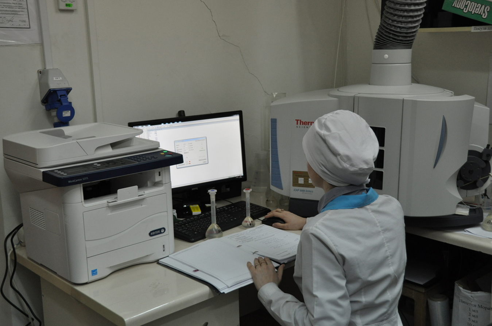

Відділ контролю якості
Ключова роль Відділу в системі якості підприємства полягає у:
- 1. Контролі якості всіх видів сировини і матеріалів, використовуваних у виробництві;
- 2. Контролі якості продукції на всіх стадіях виробничого процесу відповідно до вимог технологічного регламенту; виключення будь-яких відхилень у процесі шляхом своєчасного проведення коригувальних дій;
- 3. Контролі санітарного стану виробництва;
- 4. Вивченні претензій споживачів і дистриб'юторів;
- 5. Апробації та верифікації аналітичних методик контролю якості препаратів;
- 6. Розробці та валідації аналітичних методик.
Вирішення перерахованих вище завдань відповідає вимогам Належної Виробничої практики.
Для цього до складу
Відділу Контролю Якості включені:
• Контрольно-аналітична лабораторія
Контрольно-аналітична лабораторія проводить комплексний контроль якості готової продукції за допомогою таких методів аналізу:
- • абсорбційна спектрофотометрія в ультрафіолетовій і видимій областях:
- • поляриметрія
- • рефрактометрія
- • титрування
- • капілярна віскозиметрія
- • потенціометричне визначення рН
- • тонкослойная хроматографія
- • а також багатьох інших методів, наведених у Державній Фармакопеї України
Для проведення всіх випробувань використовується висококласне аналітичне обладнання провідних фірм Європи, США, Японії; все обладнання систематично проходить кваліфікацію.
Титратор Метром 852 Titrando - унікальний прилад, що дозволяє проводити як кулонометричне, так і волюмометрічне титрування за Карлом Фішером, дозволяє визначати вміст води у всьому діапазоні від ppm до 100%, в твердих, рідких і газоподібних речовинах.
• Лабораторія фізико-хімічних методів аналізу
Лабораторія фізико-хімічних методів аналізу також проводить комплексний контроль якості готової продукції за допомогою таких методів аналізу:
- • високоефективна рідинна і газо-рідинна хроматографія
- • інфрачервона спектроскопія
- • рефрактометрія
- • рідинна і газова мас-спектроскопія
- • ICP-спектрометрія
У цій лабораторії вперше в Україні для контролю якості сировини і готової продукції була застосована газова мас-спектроскопія. Використання мас-спектрометра типу «іонна пастка» дозволило принципово змінити рівень вхідного контролю.
У цій лабораторії вперше в Україні для контролю якості сировини і готової продукції була застосована газова мас-спектроскопія. Використання мас-спектрометра типу «іонна пастка» дозволило принципово змінити рівень вхідного контролю.
Рідинної хроматограф Agilent 1100 с -спектрометрії детектором Agilent 6420. Знаходиться в лабораторії фізико-хімічних методів аналізу ВКЯ. Використовується для вхідного контролю сировини, контролю проміжної продукції, контролю готової продукції, контролю очищення зразків і валідації методик.
Спектрометр оптичний емісійний з індуктивно-зв`язаною плазмою iCAP 6300 Duo ICP-OES with MFC, фірми Thermo Fisher Scientific. Знаходиться в лабораторії фізико-хімічних методів аналізу ВКЯ. Використовується для вхідного контролю сировини та контролю готової продукції.
• Лабораторія постадійного контролю
Лабораторії постадійного контролю в виробничих цехах оснащені всім необхідним аналітичним обладнанням для швидкого і якісного контролю проміжної і нерозфасованої продукції у всіх контрольних точках технологічного регламенту на препарат.
• Мікробіологічна лабораторія
Мікробіологічна лабораторія проводить контроль сировини, проміжної і готової продукції за наступними мікробіологічними показниками:
- • мікробіологічна чистота
- • стерильність
- • бактеріальні ендотоксини
- • кількісне визначення антибіотиків
- • аномальна токсичність
- • пірогени
Для проведення всіх випробувань використовується висококласне аналітичне обладнання провідних фірм Європи, США, Японії; все обладнання систематично проходить кваліфікацію.
У штаті лабораторій ВКЯ трудяться як досвідчені хіміки з багаторічним стажем, так і молоді фахівці - випускники провідних вузів: Національного фармацевтичного університету, Національного університету ім. В. Н. Каразіна, НТУ «Харківський політехнічний університет».